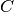
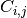
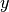
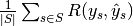
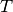

3.5. Model evaluation: quantifying the quality of predictions¶
There are 3 different approaches to evaluate the quality of predictions of a model:
- Estimator score method: Estimators have a score method providing a default evaluation criterion for the problem they are designed to solve. This is not discussed on this page, but in each estimator’s documentation.
- Scoring parameter: Model-evaluation tools using cross-validation (such as cross_validation.cross_val_score and grid_search.GridSearchCV) rely on an internal scoring strategy. This is discussed on section The scoring parameter: defining model evaluation rules.
- Metric functions: The metrics module implements functions assessing prediction errors for specific purposes. This is discussed in the section Function for prediction-error metrics.
Finally, Dummy estimators are useful to get a baseline value of those metrics for random predictions.
See also
For “pairwise” metrics, between samples and not estimators or predictions, see the Pairwise metrics, Affinities and Kernels section.
3.5.1. The scoring parameter: defining model evaluation rules¶
Model selection and evaluation using tools, such as grid_search.GridSearchCV and cross_validation.cross_val_score, take a scoring parameter that controls what metric they apply to estimators evaluated.
3.5.1.1. Common cases: predefined values¶
For the most common usecases, you can simply provide a string as the scoring parameter. Possible values are:
| Scoring | Function |
|---|---|
| Classification | |
| ‘accuracy’ | sklearn.metrics.accuracy_score |
| ‘average_precision’ | sklearn.metrics.average_precision_score |
| ‘f1’ | sklearn.metrics.f1_score |
| ‘precision’ | sklearn.metrics.precision_score |
| ‘recall’ | sklearn.metrics.recall_score |
| ‘roc_auc’ | sklearn.metrics.roc_auc_score |
| Clustering | |
| ‘adjusted_rand_score’ | sklearn.metrics.adjusted_rand_score |
| Regression | |
| ‘mean_absolute_error’ | sklearn.metrics.mean_absolute_error |
| ‘mean_squared_error’ | sklearn.metrics.mean_squared_error |
| ‘r2’ | sklearn.metrics.r2_score |
Setting the scoring parameter to a wrong value should give you a list of acceptable values:
>>> from sklearn import svm, cross_validation, datasets
>>> iris = datasets.load_iris()
>>> X, y = iris.data, iris.target
>>> model = svm.SVC()
>>> cross_validation.cross_val_score(model, X, y, scoring='wrong_choice')
Traceback (most recent call last):
ValueError: 'wrong_choice' is not a valid scoring value. Valid options are ['accuracy', 'adjusted_rand_score', 'average_precision', 'f1', 'log_loss', 'mean_absolute_error', 'mean_squared_error', 'precision', 'r2', 'recall', 'roc_auc']
Note
The corresponding scorer objects are stored in the dictionary sklearn.metrics.SCORERS.
The above choices correspond to error-metric functions that can be applied to predicted values. These are detailed below, in the next sections.
3.5.1.2. Defining your scoring strategy from score functions¶
The scoring parameter can be a callable that takes model predictions and ground truth.
However, if you want to use a scoring function that takes additional parameters, such as fbeta_score, you need to generate an appropriate scoring object. The simplest way to generate a callable object for scoring is by using make_scorer. That function converts score functions (discussed below in Function for prediction-error metrics) into callables that can be used for model evaluation.
One typical use case is to wrap an existing scoring function from the library with non default value for its parameters such as the beta parameter for the fbeta_score function:
>>> from sklearn.metrics import fbeta_score, make_scorer
>>> ftwo_scorer = make_scorer(fbeta_score, beta=2)
>>> from sklearn.grid_search import GridSearchCV
>>> from sklearn.svm import LinearSVC
>>> grid = GridSearchCV(LinearSVC(), param_grid={'C': [1, 10]}, scoring=ftwo_scorer)
The second use case is to build a completely new and custom scorer object from a simple python function:
>>> def my_custom_loss_func(ground_truth, predictions):
... diff = np.abs(ground_truth - predictions).max()
... return np.log(1 + diff)
...
>>> my_custom_scorer = make_scorer(my_custom_loss_func, greater_is_better=False)
>>> grid = GridSearchCV(LinearSVC(), param_grid={'C': [1, 10]}, scoring=my_custom_scorer)
make_scorer takes as parameters:
- the function you want to use
- whether it is a score (greater_is_better=True) or a loss (greater_is_better=False),
- whether the function you provided takes predictions as input (needs_threshold=False) or needs confidence scores (needs_threshold=True)
- any additional parameters, such as beta in an f1_score.
3.5.1.3. Implementing your own scoring object¶
You can generate even more flexible model scores by constructing your own scoring object from scratch, without using the make_scorer factory. For a callable to be a scorer, it needs to meet the protocol specified by the following two rules:
- It can be called with parameters (estimator, X, y), where estimator is the model that should be evaluated, X is validation data, and y is the ground truth target for X (in the supervised case) or None (in the unsupervised case).
- It returns a floating point number that quantifies the quality of estimator‘s predictions on X which reference to y. Again, higher numbers are better.
3.5.2. Function for prediction-error metrics¶
The module sklearn.metric also exposes a set of simple functions measuring a prediction error given ground truth and prediction:
- functions ending with _score return a value to maximize (the higher the better).
- functions ending with _error or _loss return a value to minimize (the lower the better).
3.5.2.1. Classification metrics¶
The sklearn.metrics implements several losses, scores and utility functions to measure classification performance. Some metrics might require probability estimates of the positive class, confidence values or binary decisions values.
Some of these are restricted to the binary classification case:
| hinge_loss(y_true, pred_decision[, ...]) | Average hinge loss (non-regularized) Assuming labels in y_true are encoded with +1 and -1, when a prediction mistake is made, margin = y_true * pred_decision is always negative (since the signs disagree), implying 1 - margin is always greater than 1. |
| matthews_corrcoef(y_true, y_pred) | Compute the Matthews correlation coefficient (MCC) for binary classes The Matthews correlation coefficient is used in machine learning as a measure of the quality of binary (two-class) classifications. |
| precision_recall_curve(y_true, probas_pred) | Compute precision-recall pairs for different probability thresholds Note: this implementation is restricted to the binary classification task. |
| roc_curve(y_true, y_score[, pos_label]) | Compute Receiver operating characteristic (ROC) Note: this implementation is restricted to the binary classification task. |
Others also work in the multiclass case:
| confusion_matrix(y_true, y_pred[, labels]) | Compute confusion matrix to evaluate the accuracy of a classification By definition a confusion matrix  is such that  is equal to the number of observations known to be in group  but predicted to be in group but predicted to be in group  . . |
And some also work in the multilabel case:
| accuracy_score(y_true, y_pred[, normalize]) | Accuracy classification score. |
| classification_report(y_true, y_pred[, ...]) | Build a text report showing the main classification metrics :Parameters: y_true : array-like or list of labels or label indicator matrix Ground truth (correct) target values. |
| f1_score(y_true, y_pred[, labels, ...]) | Compute the F1 score, also known as balanced F-score or F-measure The F1 score can be interpreted as a weighted average of the precision and recall, where an F1 score reaches its best value at 1 and worst score at 0. |
| fbeta_score(y_true, y_pred, beta[, labels, ...]) | Compute the F-beta score The F-beta score is the weighted harmonic mean of precision and recall, reaching its optimal value at 1 and its worst value at 0. |
| hamming_loss(y_true, y_pred[, classes]) | Compute the average Hamming loss. |
| jaccard_similarity_score(y_true, y_pred[, ...]) | Jaccard similarity coefficient score The Jaccard index [1], or Jaccard similarity coefficient, defined as the size of the intersection divided by the size of the union of two label sets, is used to compare set of predicted labels for a sample to the corresponding set of labels in y_true. |
| log_loss(y_true, y_pred[, eps, normalize]) | Log loss, aka logistic loss or cross-entropy loss. |
| precision_recall_fscore_support(y_true, y_pred) | Compute precision, recall, F-measure and support for each class The precision is the ratio tp / (tp + fp) where tp is the number of true positives and fp the number of false positives. |
| precision_score(y_true, y_pred[, labels, ...]) | Compute the precision The precision is the ratio tp / (tp + fp) where tp is the number of true positives and fp the number of false positives. |
| recall_score(y_true, y_pred[, labels, ...]) | Compute the recall The recall is the ratio tp / (tp + fn) where tp is the number of true positives and fn the number of false negatives. |
| zero_one_loss(y_true, y_pred[, normalize]) | Zero-one classification loss. |
And some work with binary and multilabel indicator format:
| average_precision_score(y_true, y_score) | Compute average precision (AP) from prediction scores This score corresponds to the area under the precision-recall curve. |
| roc_auc_score(y_true, y_score) | Compute Area Under the Curve (AUC) from prediction scores Note: this implementation is restricted to the binary classification task. |
In the following sub-sections, we will describe each of those functions.
3.5.2.1.1. Accuracy score¶
The accuracy_score function computes the accuracy, the fraction (default) or the number of correct predictions.
In multilabel classification, the function returns the subset accuracy: if the entire set of predicted labels for a sample strictly match with the true set of labels, then the subset accuracy is 1.0, otherwise it is 0.0.
If is the predicted value of
the -th sample and  is the corresponding true value,
then the fraction of correct predictions over
is the corresponding true value,
then the fraction of correct predictions over  is
defined as
is
defined as
where is the indicator function.
>>> import numpy as np
>>> from sklearn.metrics import accuracy_score
>>> y_pred = [0, 2, 1, 3]
>>> y_true = [0, 1, 2, 3]
>>> accuracy_score(y_true, y_pred)
0.5
>>> accuracy_score(y_true, y_pred, normalize=False)
2
In the multilabel case with binary indicator format:
>>> accuracy_score(np.array([[0.0, 1.0], [1.0, 1.0]]), np.ones((2, 2)))
0.5
and with a list of labels format:
>>> accuracy_score([(1,), (3,)], [(1, 2), tuple()])
0.0
Example:
- See Test with permutations the significance of a classification score for an example of accuracy score usage using permutations of the dataset.
3.5.2.1.2. Confusion matrix¶
The confusion_matrix function computes the confusion matrix to evaluate the accuracy on a classification problem.
By definition, a confusion matrix is such that is
equal to the number of observations known to be in group but
predicted to be in group . Here an example of such confusion matrix:
>>> from sklearn.metrics import confusion_matrix
>>> y_true = [2, 0, 2, 2, 0, 1]
>>> y_pred = [0, 0, 2, 2, 0, 2]
>>> confusion_matrix(y_true, y_pred)
array([[2, 0, 0],
[0, 0, 1],
[1, 0, 2]])
Here a visual representation of such confusion matrix (this figure comes from the Confusion matrix example):
Example:
- See Confusion matrix for an example of confusion matrix usage to evaluate the quality of the output of a classifier.
- See Recognizing hand-written digits for an example of confusion matrix usage in the classification of hand-written digits.
- See Classification of text documents using sparse features for an example of confusion matrix usage in the classification of text documents.
3.5.2.1.3. Classification report¶
The classification_report function builds a text report showing the main classification metrics. Here a small example with custom target_names and inferred labels:
>>> from sklearn.metrics import classification_report
>>> y_true = [0, 1, 2, 2, 0]
>>> y_pred = [0, 0, 2, 2, 0]
>>> target_names = ['class 0', 'class 1', 'class 2']
>>> print(classification_report(y_true, y_pred, target_names=target_names))
precision recall f1-score support
class 0 0.67 1.00 0.80 2
class 1 0.00 0.00 0.00 1
class 2 1.00 1.00 1.00 2
avg / total 0.67 0.80 0.72 5
Example:
- See Recognizing hand-written digits for an example of classification report usage in the classification of the hand-written digits.
- See Classification of text documents using sparse features for an example of classification report usage in the classification of text documents.
- See Parameter estimation using grid search with a nested cross-validation for an example of classification report usage in parameter estimation using grid search with a nested cross-validation.
3.5.2.1.4. Hamming loss¶
The hamming_loss computes the average Hamming loss or Hamming distance between two sets of samples.
If is the predicted value for the -th labels of
a given sample, is the corresponding true value and
is the number of class or labels, then the
Hamming loss between two samples is defined as:
where is the indicator function.
>>> from sklearn.metrics import hamming_loss
>>> y_pred = [1, 2, 3, 4]
>>> y_true = [2, 2, 3, 4]
>>> hamming_loss(y_true, y_pred)
0.25
In the multilabel case with binary indicator format:
>>> hamming_loss(np.array([[0.0, 1.0], [1.0, 1.0]]), np.zeros((2, 2)))
0.75
and with a list of labels format:
>>> hamming_loss([(1, 2), (3,)], [(1, 2), tuple()])
0.166...
Note
In multiclass classification, the Hamming loss correspond to the Hamming distance between y_true and y_pred which is equivalent to the Zero one loss function.
In multilabel classification, the Hamming loss is different from the zero-one loss. The zero-one loss penalizes any predictions that don’t exactly match the true required set of labels, while Hamming loss will penalize the individual labels. So, predicting a subset or superset of the true labels will give a Hamming loss strictly between zero and one.
The Hamming loss is upperbounded by the zero-one loss. When normalized over samples, the Hamming loss is always between zero and one.
3.5.2.1.5. Jaccard similarity coefficient score¶
The jaccard_similarity_score function computes the average (default) or sum of Jaccard similarity coefficients, also called Jaccard index, between pairs of label sets.
The Jaccard similarity coefficient of the -th samples
with a ground truth label set and a predicted label set
is defined as
In binary and multiclass classification, the Jaccard similarity coefficient score is equal to the classification accuracy.
>>> import numpy as np
>>> from sklearn.metrics import jaccard_similarity_score
>>> y_pred = [0, 2, 1, 3]
>>> y_true = [0, 1, 2, 3]
>>> jaccard_similarity_score(y_true, y_pred)
0.5
>>> jaccard_similarity_score(y_true, y_pred, normalize=False)
2
In the multilabel case with binary indicator format:
>>> jaccard_similarity_score(np.array([[0.0, 1.0], [1.0, 1.0]]), np.ones((2, 2)))
0.75
and with a list of labels format:
>>> jaccard_similarity_score([(1,), (3,)], [(1, 2), tuple()])
0.25
3.5.2.1.6. Precision, recall and F-measures¶
The precision is intuitively the ability of the classifier not to label as positive a sample that is negative.
The recall is intuitively the ability of the classifier to find all the positive samples.
The F-measure ( and measures) can be interpreted as a weighted harmonic mean of the precision and recall. A measure reaches its best value at 1 and worst score at 0. With , the measure leads to the measure, wheres the recall and the precision are equally important.
The precision_recall_curve computes a precision-recall curve from the ground truth label and a score given by the classifier by varying a decision threshold.
The average_precision_score function computes the average precision (AP) from prediction scores. This score corresponds to the area under the precision-recall curve.
Several functions allow you to analyze the precision, recall and F-measures score:
| average_precision_score(y_true, y_score) | Compute average precision (AP) from prediction scores This score corresponds to the area under the precision-recall curve. |
| f1_score(y_true, y_pred[, labels, ...]) | Compute the F1 score, also known as balanced F-score or F-measure The F1 score can be interpreted as a weighted average of the precision and recall, where an F1 score reaches its best value at 1 and worst score at 0. |
| fbeta_score(y_true, y_pred, beta[, labels, ...]) | Compute the F-beta score The F-beta score is the weighted harmonic mean of precision and recall, reaching its optimal value at 1 and its worst value at 0. |
| precision_recall_curve(y_true, probas_pred) | Compute precision-recall pairs for different probability thresholds Note: this implementation is restricted to the binary classification task. |
| precision_recall_fscore_support(y_true, y_pred) | Compute precision, recall, F-measure and support for each class The precision is the ratio tp / (tp + fp) where tp is the number of true positives and fp the number of false positives. |
| precision_score(y_true, y_pred[, labels, ...]) | Compute the precision The precision is the ratio tp / (tp + fp) where tp is the number of true positives and fp the number of false positives. |
| recall_score(y_true, y_pred[, labels, ...]) | Compute the recall The recall is the ratio tp / (tp + fn) where tp is the number of true positives and fn the number of false negatives. |
Note that the precision_recall_curve function is restricted to the binary case. The average_precision_score function works only in binary classification and multilabel indicator format.
Examples:
- See Classification of text documents using sparse features for an example of f1_score usage with classification of text documents.
- See Parameter estimation using grid search with a nested cross-validation for an example of precision_score and recall_score usage in parameter estimation using grid search with a nested cross-validation.
- See Precision-Recall for an example of precision-Recall metric to evaluate the quality of the output of a classifier with precision_recall_curve.
- See Sparse recovery: feature selection for sparse linear models for an example of precision_recall_curve usage in feature selection for sparse linear models.
3.5.2.1.6.1. Binary classification¶
In a binary classification task, the terms ‘’positive’’ and ‘’negative’’ refer to the classifier’s prediction and the terms ‘’true’’ and ‘’false’’ refer to whether that prediction corresponds to the external judgment (sometimes known as the ‘’observation’‘). Given these definitions, we can formulate the following table:
| Actual class (observation) | ||
| Predicted class (expectation) | tp (true positive) Correct result | fp (false positive) Unexpected result |
| fn (false negative) Missing result | tn (true negative) Correct absence of result | |
In this context, we can define the notions of precision, recall and F-measure:
Here some small examples in binary classification:
>>> from sklearn import metrics
>>> y_pred = [0, 1, 0, 0]
>>> y_true = [0, 1, 0, 1]
>>> metrics.precision_score(y_true, y_pred)
1.0
>>> metrics.recall_score(y_true, y_pred)
0.5
>>> metrics.f1_score(y_true, y_pred)
0.66...
>>> metrics.fbeta_score(y_true, y_pred, beta=0.5)
0.83...
>>> metrics.fbeta_score(y_true, y_pred, beta=1)
0.66...
>>> metrics.fbeta_score(y_true, y_pred, beta=2)
0.55...
>>> metrics.precision_recall_fscore_support(y_true, y_pred, beta=0.5)
(array([ 0.66..., 1. ]), array([ 1. , 0.5]), array([ 0.71..., 0.83...]), array([2, 2]...))
>>> import numpy as np
>>> from sklearn.metrics import precision_recall_curve
>>> from sklearn.metrics import average_precision_score
>>> y_true = np.array([0, 0, 1, 1])
>>> y_scores = np.array([0.1, 0.4, 0.35, 0.8])
>>> precision, recall, threshold = precision_recall_curve(y_true, y_scores)
>>> precision
array([ 0.66..., 0.5 , 1. , 1. ])
>>> recall
array([ 1. , 0.5, 0.5, 0. ])
>>> threshold
array([ 0.35, 0.4 , 0.8 ])
>>> average_precision_score(y_true, y_scores)
0.79...
3.5.2.1.6.2. Multiclass and multilabel classification¶
In multiclass and multilabel classification task, the notions of precision, recall and F-measures can be applied to each label independently. There are a few ways to combine results across labels, specified by the average argument to the average_precision_score (multilabel only), f1_score, fbeta_score, precision_recall_fscore_support, precision_score and recall_score functions:
- "micro": calculate metrics globally by counting the total true positives, false negatives and false positives. Except in the multi-label case this implies that precision, recall and are equal.
- "samples": calculate metrics for each sample, comparing sets of labels assigned to each, and find the mean across all samples. This is only meaningful and available in the multilabel case.
- "macro": calculate metrics for each label, and find their mean. This does not take label imbalance into account.
- "weighted": calculate metrics for each label, and find their average weighted by the number of occurrences of the label in the true data. This alters "macro" to account for label imbalance; it may produce an F-score that is not between precision and recall.
- None: calculate metrics for each label and do not average them.
To make this more explicit, consider the following notation:
-  the set of predicted pairs
 the set of true pairs
the set of true pairs the set of labels
the set of labels the set of samples
the set of samples- the subset of with sample
 ,
i.e.
,
i.e. - the subset of with label

- similarly, and are subsets of
- (Conventions vary on handling ; this implementation uses , and similar for P.)
Then the metrics are defined as:
| average | Precision | Recall | F_beta |
|---|---|---|---|
| "micro" | |||
| "samples" |  | ||
| "macro" | |||
| "weighted" | |||
| None |
>>> from sklearn import metrics
>>> y_true = [0, 1, 2, 0, 1, 2]
>>> y_pred = [0, 2, 1, 0, 0, 1]
>>> metrics.precision_score(y_true, y_pred, average='macro')
0.22...
>>> metrics.recall_score(y_true, y_pred, average='micro')
...
0.33...
>>> metrics.f1_score(y_true, y_pred, average='weighted')
0.26...
>>> metrics.fbeta_score(y_true, y_pred, average='macro', beta=0.5)
0.23...
>>> metrics.precision_recall_fscore_support(y_true, y_pred, beta=0.5, average=None)
...
(array([ 0.66..., 0. , 0. ]), array([ 1., 0., 0.]), array([ 0.71..., 0. , 0. ]), array([2, 2, 2]...))
3.5.2.1.7. Hinge loss¶
The hinge_loss function computes the average hinge loss function. The hinge loss is used in maximal margin classification as support vector machines.
If the labels are encoded with +1 and -1, : is the true
value and  is the predicted decisions as output by
decision_function, then the hinge loss is defined as:
is the predicted decisions as output by
decision_function, then the hinge loss is defined as:
Here a small example demonstrating the use of the hinge_loss function with a svm classifier:
>>> from sklearn import svm
>>> from sklearn.metrics import hinge_loss
>>> X = [[0], [1]]
>>> y = [-1, 1]
>>> est = svm.LinearSVC(random_state=0)
>>> est.fit(X, y)
LinearSVC(C=1.0, class_weight=None, dual=True, fit_intercept=True,
intercept_scaling=1, loss='l2', multi_class='ovr', penalty='l2',
random_state=0, tol=0.0001, verbose=0)
>>> pred_decision = est.decision_function([[-2], [3], [0.5]])
>>> pred_decision
array([-2.18..., 2.36..., 0.09...])
>>> hinge_loss([-1, 1, 1], pred_decision)
0.3...
3.5.2.1.8. Log loss¶
The log loss, also called logistic regression loss or cross-entropy loss, is a loss function defined on probability estimates. It is commonly used in (multinomial) logistic regression and neural networks, as well as some variants of expectation-maximization, and can be used to evaluate the probability outputs (predict_proba) of a classifier, rather than its discrete predictions.
For binary classification with a true label and a probability estimate , the log loss per sample is the negative log-likelihood of the classifier given the true label:
This extends to the multiclass case as follows.
Let the true labels for a set of samples
be encoded as a 1-of-K binary indicator matrix ,
i.e. if sample has label  taken from a set of
taken from a set of  labels.
Let
labels.
Let  be a matrix of probability estimates,
with .
Then the total log loss of the whole set is
be a matrix of probability estimates,
with .
Then the total log loss of the whole set is
The function log_loss computes either total or mean log loss given a list of ground-truth labels and a probability matrix, as returned by an estimator’s predict_proba method.
>>> from sklearn.metrics import log_loss
>>> y_true = [0, 0, 1, 1]
>>> y_pred = [[.9, .1], [.8, .2], [.3, .7], [.01, .99]]
>>> log_loss(y_true, y_pred)
0.1738...
The first [.9, .1] in y_pred denotes 90% probability that the first sample has label 0. The log loss is non-negative.
3.5.2.1.9. Matthews correlation coefficient¶
The matthews_corrcoef function computes the Matthew’s correlation coefficient (MCC) for binary classes (quoting the Wikipedia article on the Matthew’s correlation coefficient):
“The Matthews correlation coefficient is used in machine learning as a measure of the quality of binary (two-class) classifications. It takes into account true and false positives and negatives and is generally regarded as a balanced measure which can be used even if the classes are of very different sizes. The MCC is in essence a correlation coefficient value between -1 and +1. A coefficient of +1 represents a perfect prediction, 0 an average random prediction and -1 an inverse prediction. The statistic is also known as the phi coefficient.”
If , , and are respectively the number of true positives, true negatives, false positives ans false negatives, the MCC coefficient is defined as

Here a small example illustrating the usage of the matthews_corrcoef function:
>>> from sklearn.metrics import matthews_corrcoef
>>> y_true = [+1, +1, +1, -1]
>>> y_pred = [+1, -1, +1, +1]
>>> matthews_corrcoef(y_true, y_pred)
-0.33...
3.5.2.1.10. Receiver operating characteristic (ROC)¶
The function roc_curve computes the receiver operating characteristic curve, or ROC curve (quoting Wikipedia):
“A receiver operating characteristic (ROC), or simply ROC curve, is a graphical plot which illustrates the performance of a binary classifier system as its discrimination threshold is varied. It is created by plotting the fraction of true positives out of the positives (TPR = true positive rate) vs. the fraction of false positives out of the negatives (FPR = false positive rate), at various threshold settings. TPR is also known as sensitivity, and FPR is one minus the specificity or true negative rate.”
This function requires the true binary value and the target scores, which can either be probability estimates of the positive class, confidence values, or binary decisions. Here a small example of how to use the roc_curve function:
>>> import numpy as np
>>> from sklearn.metrics import roc_curve
>>> y = np.array([1, 1, 2, 2])
>>> scores = np.array([0.1, 0.4, 0.35, 0.8])
>>> fpr, tpr, thresholds = roc_curve(y, scores, pos_label=2)
>>> fpr
array([ 0. , 0.5, 0.5, 1. ])
>>> tpr
array([ 0.5, 0.5, 1. , 1. ])
>>> thresholds
array([ 0.8 , 0.4 , 0.35, 0.1 ])
The following figure shows an example of such ROC curve.
The roc_auc_score function computes the area under the receiver operating characteristic (ROC) curve, which is also denoted by AUC or AUROC. By computing the area under the roc curve, the curve information is summarized in one number. For more information see the Wikipedia article on AUC.
>>> import numpy as np
>>> from sklearn.metrics import roc_auc_score
>>> y_true = np.array([0, 0, 1, 1])
>>> y_scores = np.array([0.1, 0.4, 0.35, 0.8])
>>> roc_auc_score(y_true, y_scores)
0.75
In multi-label classification, the roc_auc_score function is extended by averaging over the labels:
- "micro": computes the area under the ROC curve globally obtained by considering each element of the label indicator matrix as a label.
- "samples": computes the area under the ROC curve on each sample, comparing the set of labels and scores assigned to each, and find the mean across all samples.
- "macro": computes the area under the ROC curve for each label, and find their mean.
- "weighted": computes the area under the ROC curve for each label, and find their average weighted by the number of occurrences of the label in the true data.
- None: this returns an array of scores with scores with shape (n_classes,) instead of an aggregate scalar score.
Compared to metrics such as the subset accuracy, the hamming loss or the F1 score, ROC AUC doesn’t require to optimize a threshold for each label. The roc_auc_score function can also be used in multi-class classification if predicted outputs have been binarized.

Examples:
- See Receiver Operating Characteristic (ROC) for an example of receiver operating characteristic (ROC) metric to evaluate the quality of the output of a classifier.
- See Receiver Operating Characteristic (ROC) with cross validation for an example of receiver operating characteristic (ROC) metric to evaluate the quality of the output of a classifier using cross-validation.
- See Species distribution modeling for an example of receiver operating characteristic (ROC) metric to model species distribution.
3.5.2.1.11. Zero one loss¶
The zero_one_loss function computes the sum or the average of the 0-1 classification loss () over . By defaults, the function normalizes over the sample. To get the sum of the , set normalize to False.
In multilabel classification, the zero_one_loss function corresponds to the subset zero-one loss: the subset of labels must be correctly predict.
If is the predicted value of
the -th sample and is the corresponding true value,
then the 0-1 loss is defined as:
where is the indicator function.
>>> from sklearn.metrics import zero_one_loss
>>> y_pred = [1, 2, 3, 4]
>>> y_true = [2, 2, 3, 4]
>>> zero_one_loss(y_true, y_pred)
0.25
>>> zero_one_loss(y_true, y_pred, normalize=False)
1
In the multilabel case with binary indicator format:
>>> zero_one_loss(np.array([[0.0, 1.0], [1.0, 1.0]]), np.ones((2, 2)))
0.5
and with a list of labels format:
>>> zero_one_loss([(1,), (3,)], [(1, 2), tuple()])
1.0
Example:
- See Recursive feature elimination with cross-validation for an example of the zero one loss usage to perform recursive feature elimination with cross-validation.
3.5.2.2. Regression metrics¶
The sklearn.metrics implements several losses, scores and utility functions to measure regression performance. Some of those have been enhanced to handle the multioutput case: mean_absolute_error, mean_absolute_error and r2_score.
3.5.2.2.1. Explained variance score¶
The explained_variance_score computes the explained variance regression score.
If is the estimated target output
and is the corresponding (correct) target output, then the explained
variance is estimated as follow:
The best possible score is 1.0, lower values are worse.
Here a small example of usage of the explained_variance_score function:
>>> from sklearn.metrics import explained_variance_score
>>> y_true = [3, -0.5, 2, 7]
>>> y_pred = [2.5, 0.0, 2, 8]
>>> explained_variance_score(y_true, y_pred)
0.957...
3.5.2.2.2. Mean absolute error¶
The mean_absolute_error function computes the mean absolute error, which is a risk function corresponding to the expected value of the absolute error loss or -norm loss.
If is the predicted value of the -th sample
and is the corresponding true value, then the mean absolute error
(MAE) estimated over is defined as

Here a small example of usage of the mean_absolute_error function:
>>> from sklearn.metrics import mean_absolute_error
>>> y_true = [3, -0.5, 2, 7]
>>> y_pred = [2.5, 0.0, 2, 8]
>>> mean_absolute_error(y_true, y_pred)
0.5
>>> y_true = [[0.5, 1], [-1, 1], [7, -6]]
>>> y_pred = [[0, 2], [-1, 2], [8, -5]]
>>> mean_absolute_error(y_true, y_pred)
0.75
3.5.2.2.3. Mean squared error¶
The mean_squared_error function computes the mean square error, which is a risk function corresponding to the expected value of the squared error loss or quadratic loss.
If is the predicted value of the -th sample
and is the corresponding true value, then the mean squared error
(MSE) estimated over is defined as
Here a small example of usage of the mean_squared_error function:
>>> from sklearn.metrics import mean_squared_error
>>> y_true = [3, -0.5, 2, 7]
>>> y_pred = [2.5, 0.0, 2, 8]
>>> mean_squared_error(y_true, y_pred)
0.375
>>> y_true = [[0.5, 1], [-1, 1], [7, -6]]
>>> y_pred = [[0, 2], [-1, 2], [8, -5]]
>>> mean_squared_error(y_true, y_pred)
0.7083...
Examples:
- See Gradient Boosting regression for an example of mean squared error usage to evaluate gradient boosting regression.
3.5.2.2.4. R² score, the coefficient of determination¶
The r2_score function computes R², the coefficient of determination. It provides a measure of how well future samples are likely to be predicted by the model.
If is the predicted value of the -th sample
and is the corresponding true value, then the score R² estimated
over is defined as
where .
Here a small example of usage of the r2_score function:
>>> from sklearn.metrics import r2_score
>>> y_true = [3, -0.5, 2, 7]
>>> y_pred = [2.5, 0.0, 2, 8]
>>> r2_score(y_true, y_pred)
0.948...
>>> y_true = [[0.5, 1], [-1, 1], [7, -6]]
>>> y_pred = [[0, 2], [-1, 2], [8, -5]]
>>> r2_score(y_true, y_pred)
0.938...
Example:
- See Lasso and Elastic Net for Sparse Signals for an example of R² score usage to evaluate Lasso and Elastic Net on sparse signals.
3.5.3. Clustering metrics¶
The sklearn.metrics implements several losses, scores and utility function for more information see the Clustering performance evaluation section.
3.5.4. Biclustering metrics¶
The sklearn.metrics module implements bicluster scoring metrics. For more information see the Biclustering evaluation section.
3.5.4.1. Clustering metrics¶
The sklearn.metrics implements several losses, scores and utility functions. For more information see the Clustering performance evaluation section.
3.5.5. Dummy estimators¶
When doing supervised learning, a simple sanity check consists in comparing one’s estimator against simple rules of thumb. DummyClassifier implements three such simple strategies for classification:
stratified generates randomly predictions by respecting the training set’s class distribution,
most_frequent always predicts the most frequent label in the training set,
uniform generates predictions uniformly at random.
- constant always predicts a constant label that is provided by the user.
A major motivation of this method is F1-scoring when the positive class is in the minority.
Note that with all these strategies, the predict method completely ignores the input data!
To illustrate DummyClassifier, first let’s create an imbalanced dataset:
>>> from sklearn.datasets import load_iris
>>> from sklearn.cross_validation import train_test_split
>>> iris = load_iris()
>>> X, y = iris.data, iris.target
>>> y[y != 1] = -1
>>> X_train, X_test, y_train, y_test = train_test_split(X, y, random_state=0)
Next, let’s compare the accuracy of SVC and most_frequent:
>>> from sklearn.dummy import DummyClassifier
>>> from sklearn.svm import SVC
>>> clf = SVC(kernel='linear', C=1).fit(X_train, y_train)
>>> clf.score(X_test, y_test)
0.63...
>>> clf = DummyClassifier(strategy='most_frequent',random_state=0)
>>> clf.fit(X_train, y_train)
DummyClassifier(constant=None, random_state=0, strategy='most_frequent')
>>> clf.score(X_test, y_test)
0.57...
We see that SVC doesn’t do much better than a dummy classifier. Now, let’s change the kernel:
>>> clf = SVC(kernel='rbf', C=1).fit(X_train, y_train)
>>> clf.score(X_test, y_test)
0.97...
We see that the accuracy was boosted to almost 100%. For a better estimate of the accuracy, it is recommended to use a cross validation strategy, if it is not too CPU costly. For more information see the Cross-validation: evaluating estimator performance section. Moreover if you want to optimize over the parameter space, it is highly recommended to use an appropriate methodology see the Grid Search: Searching for estimator parameters section.
More generally, when the accuracy of a classifier is too close to random classification, it probably means that something went wrong: features are not helpful, a hyper parameter is not correctly tuned, the classifier is suffering from class imbalance, etc...
DummyRegressor implements a simple rule of thumb for regression: always predict the mean of the training targets.